실내건축산업기사 (2009-07-26 기출문제)
1과목: 실내디자인론
1. 공간의 레이아웃(lay out)과 가장 밀접한 관계를 가지고 있는 것은?
- 재료계획
- 동선계획
- 설비계획
- 색채계획
(정답률: 89%)

2. 실내디자인 과정을 조사분석 단계와 디자인 단계로 나눌 때, 다음 중 조사분석 단계에 속하지 않는 것은?
- 문제점 인식
- 아이디어의 시각화
- 정보의 수집
- 클라이언트의 요구사항 파악
(정답률: 90%)
3. 실내디자인에 대한 설명으로 올바르지 않은 것은?
- 실내디자인은 이용자 특성에 대한 제약을 벗어나 공간 예술 창조의 자유가 보장되어야 한다.
- 효율적인 공간창출을 위하여 제반요소에 대한 분석작업이 우선되어야 한다.
- 인간의 활동을 도와주며, 동시에 미적인 만족을 주는 환경을 창조한다.
- 건축 및 환경과의 상호성을 고려하여 계획하여야 한다.
(정답률: 87%)
4. 디자인의 요소 중 선에 관한 아래의 그림이 의미하는 것은?
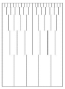
- 선을 포개면 패턴을 얻을 수 있다.
- 선을 끊음으로써 점을 느낀다.
- 조밀성의 변화로 깊이를 느낀다.
- 양감의 효과를 얻는다.
(정답률: 67%)
5. 일반적으로 규칙적인 요소들의 반복에 의해 나타나는 통제된 운동감으로 정의되는 것은?
- 강조(emphasis)
- 균형(balance)
- 비례(proportion)
- 리듬(rhythm)
(정답률: 84%)
6. 다음 중 전시공간의 규모 설정에 영향을 주는 요인과 가장 거리가 먼 것은?
- 전시의 목적
- 전시자료의 크기와 수량
- 전시공간 평면형태
- 전시방법
(정답률: 61%)
7. 동선에 대한 설명 중 옳지 않은 것은?
- 동선 계획시 통행량, 이동상태, 물건의 부피 등에 따라 적정 통로 폭을 결정한다.
- 동선 계획시 출입구의 위치는 고려하지 않는다.
- 동선이 교차하는 위치는 통로를 넓혀 혼잡을 피하도록 한다.
- 동선을 짧을수록 효과적이나 공간에 따라 많은 시간을 머물도록 유도하기도 한다.
(정답률: 83%)
8. 실내디자인 프로세스의 작업 단계별 순서로 가장 알맞은 것은?
- 구상 - 설계 - 기획 - 구현 - 완공
- 기획 - 설계 - 구상 - 구현 - 완공
- 구상 - 기획 - 구현 - 설계 - 완공
- 기획 - 구상 - 설계 - 구현 - 완공
(정답률: 74%)
9. 다음 중 심리적 공간 분할에 사용되는 요소와 가장 거리가 먼 것은?
- 열주
- 벽난로
- 조각
- 바닥면의 단차
(정답률: 47%)
10. 부엌의 작업대의 배치 순서로 가장 알맞은 것은?
- 준비대 - 개수대 - 조리대 - 가열대 - 배선대
- 준비대 - 조리대 - 개수대 - 가열대 - 배선대
- 준비대 - 가열대 - 개수대 - 조리대 - 배선대
- 준비대 - 개수대 - 가열대 - 조리대 - 배선대
(정답률: 82%)
11. 면에 대한 설명으로 옳은 것은?
- 면은 선의 절단에 의해서 형성된다.
- 면은 선이 이동한 궤적이다.
- 면은 양감과 부피를 갖는다.
- 면의 종류에는 수직면과 수평면만이 있다.
(정답률: 54%)
12. 다음 중 박물관의 기본적인 기능과 가장 거리가 먼 것은?
- 학술 조사 및 연구 기능
- 자료의 보존 및 전시 기능
- 지식의 전달 기능
- 영리적인 판매 촉진 기능
(정답률: 89%)
13. 다음의 벽의 기능에 대한 설명 중 옳지 않은 것은?
- 외부로부터의 방어와 프라이버시 확보
- 가구를 놓거나 배치하기 위한 기준면 제공
- 공간과 공간을 구분
- 공간의 형태 결정
(정답률: 63%)
14. 실내디자인에 대한 설명 중 가장 부적당한 것은?
- 실내디자인은 인간이 보다 적합한 환경에서 생활할 수 있도록 하기 위한 것이다.
- 쾌적한 실내디자인이란 기능적 측면과 감성적 측면이 공간으로 구체화한 것이다.
- 주거공간의 기능은 작업, 휴식, 취침, 취식으로 구분할 수 있다.
- 수익성을 추구하지 않는 주거공간 디자인에서 경제성은 고려 대상이 아니다.
(정답률: 85%)
15. 다음의 건축화 조명 방식에 대한 설명 중 옳지 않은 것은?
- 코니스 조명 : 벽면의 상부에 위치하여 모든 빛이 아래로 직사하도록 하는 조명방식이다.
- 밸런스 조명 : 창이나 벽의 커튼 상부에 부설된 조명이다.
- 코브조명 : 반사광을 사용하지 않고 광원의 빛을 직접 조명하는 방법이다.
- 캐노피 조명 : 벽면이나 천장면의 일부를 돌출시켜 조명을 설치, 강한 조명을 아래로 비추는 조명방식이다.
(정답률: 74%)
16. 부엌 작업대의 배치유형에 관한 설명 중 옳은 것은?
- 일렬형은 부엌의 폭이 넓은 경우에 주로 사용된다.
- 병렬형은 작업대가 마주보고 있어 동선이 짧아 가사노동 경감에 효과적이다.
- ㄱ자형은 인접한 세 벽면에 작업대를 붙여 배치한 형태로 비교적 규모가 큰 공간에 적합하다.
- ㄷ자형은 식당과 부엌이 개방되지 않고 외부로 통하는 출입구가 필요한 경우에 적합하다.
(정답률: 67%)
17. 반간접조명방식에 대한 설명으로 옳은 것은?
- 광원으로부터 모든 방향으로 빛이 투사되는 방식
- 빛의 60~90%를 반사면에 투사시킨 반사광과 함께 나머지를 직접 조명분으로 조명하는 방식
- 천장, 벽 등에 반사된 빛만을 사용하는 방식
- 특정장소와 위치에 빛을 투사하는 방식
(정답률: 72%)
18. 서로 다른 특성을 가진 요소를 같은 공간에 배열할 때 서로의 특성을 더욱 돋보이게 하는 디자인 원리는?
- 리듬
- 통일
- 대비
- 균형
(정답률: 88%)
19. 기념비적인 스케일에서 일반적으로 느껴지는 감정은?
- 소박함
- 안도감
- 친밀감
- 엄숙함
(정답률: 80%)
20. 보석점 계획에 대한 설명 중 옳지 않은 것은?
- 직접 판매와 포장이 가능한 측면판매 형식이 바람직하다.
- 쇼케이스 안의 조도를 상점 내부의 조도보다 높게 한다.
- 계산대, 포장대는 쇼케이스와 겸용하는 것을 고려한다.
- 쇼케이스 배치는 고객동선을 고려하여 결정한다.
(정답률: 70%)
2과목: 색채 및 인간공학
21. 음원과 관측자가 서로 상대 속도를 가질 때 음원의 소리보다 더 높거나 낮은 소리를 듣게 되는 현상을 무엇이라 하는가?
- 도플러 효가
- 가현 운동
- 은폐 작용
- 여파 작용
(정답률: 51%)
22. 다음 중 인간의 눈에 관한 설명으로 틀린 것은?
- 공막은 눈의 흰자위 부분이며, 안구를 보호하는 섬유성막이다.
- 망막은 안구의 가장 안쪽에 있으며, 물체의 상이 생기는 부분이다.
- 시세포에는 명암을 구분하는 원추세포와 색을 인식하는 간상세포가 있다.
- 초자체는 수정체와 망막 사이의 공간에 들어 있는 무색 투명한 젤리모양의 조직이다.
(정답률: 41%)
23. 다음 중 정신적 작업부하에 관한 생리적 측정치에 해당하지 않는 것은?
- 부정맥지수
- 산소소비량
- 동공의 지름
- 점멸융합주파수
(정답률: 24%)
24. 다음 중 같은 시간을 작업할 경우 신체활동에 따르는 에너지소비량(kal/min)이 가장 큰 작업은?
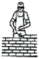
(정답률: 44%)
25. 다음 중 단회전용 제어장치로 가장 적합한 것은?
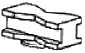
(정답률: 59%)
26. 다음 중 한국인 인체지수조사 사업에 있어서 인체지수 측정 항목 중 '앉은어깨높이'에 해당하는 것은?
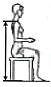
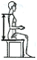
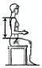
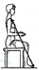
(정답률: 50%)
27. 인간의 피부면에 가장 넓게 분포되어 있으며 가장 빨리 대뇌에 전달되는 감각은?
- 통각
- 온각
- 압각
- 미각
(정답률: 71%)
28. 두 소리의 강도(强度)를 압력으로 측정한 결과 나중에 발생한 소리가 처음보다 압력이 100배 증가하였다면 두음의 강도차는 몇 dB인가?
- 40
- 60
- 80
- 100
(정답률: 55%)
29. 다음 중 조명의 위치로 가장 적절한 것은?
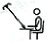
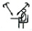
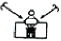
(정답률: 55%)
30. 다음 중 동작 경제의 원칙으로 틀린 것은?
- 가능하다면 낙하식 운반 방법을 이용한다.
- 두 팔의 동작은 같은 방향으로 수직운동을 한다.
- 두 손의 동작은 같이 시작하고 같이 끝나도록 한다.
- 손의 동작은 완만하게 연속적인 동작이 되도록 한다.
(정답률: 60%)
31. 색의 맑거나 흐린 정도의 차를 의미하는 것은?
- 명도
- 채도
- 색상
- 색입체
(정답률: 58%)
32. 난색의 관한 설명 중 옳은 것은?
- 대체로 진출색과 일치한다.
- 같은 정도의 색조일 때 한색보다 자극이 약하다.
- 한색보다는 사람에게 친근감을 덜 준다.
- 한색보다 사람을 차분하게 하는 효과가 있다.
(정답률: 54%)
33. 다음 문·스펜서의 색채조화론 중 맞지 않은 것은?
- 동일의 조화(identity)
- 유사의 조화(similarity)
- 대비의 조화(contrast)
- 통일의 조화(unity)
(정답률: 56%)
34. 혼색에 대한 설명 중 옳은 것은?
- 가법혼색을 하면 채도가 증가한다.
- 여러 장의 색필터를 겹쳐서 내는 투과색은 가법혼색이다.
- 병치혼색을 하면 명도가 증가한다.
- 가법혼색의 3원색은 빨강(R), 녹색(G). 파랑(B)이다.
(정답률: 43%)
35. 우리 눈의 시세포 중에서 색의 지각이 아닌 흑색, 회색, 백색의 명암만을 판단하는 시세포는?
- 추상체
- 간상체
- 수평세포
- 양극세포
(정답률: 61%)
36. 같은 물체색이라도 조명에 따라 다르게 보이는 현상은?
- 분광특성
- 연색성
- 색순응
- 등색성
(정답률: 56%)
37. 명도와 채도에 관한 유채색의 수식 형용사 중 가장 고채도를 나타내는 것은?
- right
- pale
- vivid
- deep
(정답률: 57%)
38. 다음은 멀셀의 기본 표색계이다. (A)에 맞는 요소는?
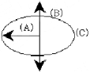
- white
- Hue
- Chroma
- Value
(정답률: 47%)
39. 빨강색을 30초 이상 응시하다 흰색화면을 보면 나타나는 색은?
- 주황
- 청록
- 검정
- 파랑
(정답률: 53%)
40. 영화관에 들어갔을 때 한참 후에야 주위 환경을 지각하게 되는 시지각 현상은?
- 명순응
- 색순응
- 암순응
- 시순응
(정답률: 81%)
3과목: 건축재료
41. 강도, 경도, 비중이 크며 내화적이고 석질이 극히 치밀하여 구조용 석재 또는 장식재로 널리 쓰이는 것은?
- 화강암
- 응회암
- 캐스트스톤
- 안산암
(정답률: 34%)
42. 원목을 양마구리 중심을 축으로 회전시켜 기계로 대패로 나이테를 따라 두루마리를 펴듯이 연속적으로 벗기는 방법으로 아름다운 무늬를 얻을 수 있고 가장 많이 사용하는 단판의 제조 방법은?
- 슬라이스드 베니어(sliced veneer)
- 소우드 베니어(sawed veneer)
- 로터리 베니어(rotary veneer)
- 단판 베니어
(정답률: 68%)
43. 각종 도료 및 도료의 원료에 관한 설명으로 옳지 않은 것은?
- 알키드 수지를 활용한 도료는 건조 초기의 내수성이 떨어지며 내알칼리성이 좋지 못하다.
- 바니쉬는 수지류를 건성유 또는 휘발성 용제로 용해한 것이다.
- 신너(Thimer)는 도막형성재로서 도막 주요소를 용해시킨다.
- 가소제는 건조된 도막에 탄·교착성 등을 줌으로써 내구력을 증가시키는 데 쓰이는 도막형성 부요소이다.
(정답률: 33%)
44. 다음 중 염화비닐수지의 용도로 가장 적합하지 않은 것은?
- 파이프
- 타일
- 도료
- 유리 대용품
(정답률: 50%)
45. 다음 중 플라스틱(plastic)의 장점으로 옳지 않은 것은?
- 전기절연성이 양호하다.
- 가공성이 우수하다.
- 비강도가 콘크리트에 비해 크다.
- 경도 및 내마모성이 강하다.
(정답률: 35%)
46. 다음 중 강재의 응력-변형도 곡선에서 가장 먼저 나타나는 점은?
- 상항복점
- 비례한도점
- 하항복점
- 파단점
(정답률: 54%)
47. 건축용 소성 점토벽돌의 색채에 영향을 주는 주요한 요인이 아닌 것은?
- 철화합물
- 망간화합물
- 소성온도
- 산화나트륨
(정답률: 34%)
48. 콘크리트에 대한 다음 설명 중 옳지 않은 것은?
- 잔고재율은 요구하는 콘크리트의 품질이 얻어질 수 있는 범위 내에서 가능한 작게 한다.
- 시멘트의 분말도가 지나치게 크면 건조수축이 커져서 균열이 발생하기 쉽다.
- 레이턴스 현상의 피해는 주로 응결경화의 지연으로 나타난다.
- 보통 콘크리트에 있어서 경화에 의한 건조수축은 단위 시멘트량이 많을수록 크다.
(정답률: 34%)
49. 석고계 플라스터 중 가장 경질이며 벽 바름 재료뿐만아니라 바닥 바름 재료로도 사용되는 것은?
- 킨스시멘트
- 혼합석고 플라스터
- 회반죽
- 돌로마이트 플라스터
(정답률: 50%)
50. 다음 중 상수면 이하에 박은 기초말뚝의 예처럼 목재를 수중에 완전 침수하는 목적으로 가장 적절한 것은?
- 부패를 방지하기 위해
- 가공을 용이하게 하기 위해
- 강도를 증가시키기 위해
- 내화성을 높이기 위해
(정답률: 57%)
51. 다음 각종 미장재료에 대한 설명 중 옳지 않은 것은?
- 회반죽바름은 수경성 재료이면 소석회에 물과 풀을 넣고 여물을 섞어 바른다.
- 질석모르타르는 질석을 모르타르에 혼입한 것으로 내화 피복용 바름재로 쓰인다.
- 돌로마이트 플라스터는 기경성 재료이며 건조수축이 크다.
- 석고 플라스터는 석고를 주원료로 하고 혼화재, 접착제, 응결시간조절재 등을 혼합한 플라스터이다.
(정답률: 40%)
52. 성분 중에 알루민산철3석회를 극히 적게 한 것으로 소량의 안료를 첨가하면 여러 가지 색깔을 낼 수 있는 시멘트는?
- 플라이애쉬 시멘트
- 보통 포틀랜드 시멘트
- 백색 포틀랜드시멘트
- 실리카 시멘트
(정답률: 60%)
53. 다음 중 시멘트의 안정성 시험은?
- 슬럼프 테스트
- 브레인법
- 길모아 시험
- 오토클레이브 팽창도 시험
(정답률: 48%)
54. 다음 중 유리와 유리사이에 유연성 있는 강하고 투명한 플라스틱 필름을 넣고 고열로 접착시킨 유리는?
- 복층유리
- 강화유리
- 스팬드럴유리
- 접합유리
(정답률: 47%)
55. 콘크리트용 혼화제에 관한 설명 중 옳지 않은 것은?
- AE제는 시멘트 입자를 분산시켜 소요 워커빌리티를 얻기 위한 단위수량을 감소시킨다.
- 급결제는 초미립자로 구성되며 이를 사용한 콘크리트의 초기강도는 작으나, 장기강도는 일반적으로 높다.
- 감수제는 계면활성제의 일종으로 콘크리트 속에 독립된 미세한기포를 골고루 분산시키는 작용을 한다.
- 지연제는 굳지 않은 콘크리트의 운송시간에 따른 콜드 주인트 발생을 억제하기 위하여 사용된다.
(정답률: 30%)
56. 불림하거나 담금질한 강을 다시 200~600℃ 로 가열한 후 공기 중에서 냉각하는 처리를 말하며, 내부응력을 제거하며 연성과 인성을 크게 하기 위해 실시하는 것은?
- 뜨임질
- 압출
- 중합
- 단조
(정답률: 65%)
57. 다음 중 오일스테인의 사용 목적으로 적절한 것은?
- 방청
- 희석
- 착색
- 건조
(정답률: 33%)
58. 탄소함유량에 의한 철의 분류 중 탄소량이 가장 많은 것은?
- 순철
- 연철
- 강
- 주철
(정답률: 36%)
59. 점토 벽돌 1종의 압축강도는 최소 얼마 이상인가?
- 10.78MPa
- 20.59MPa
- 22.54MPa
- 25.35MPa
(정답률: 35%)
60. 절대건조비중이 0.69인 목재의 공극률은?
- 31.0%
- 44.8%
- 55.2%
- 69.0%
(정답률: 40%)
4과목: 건축일반
61. 보강블록구조의 내벽력의 벽량은 최소 얼마 이상으로 하여야 하는가?
- 10㎝/m2
- 15㎝/m2
- 20㎝/m2
- 25㎝/m2
(정답률: 43%)
62. 메소포타미아 주택건축의 특징에 대한 설명 중 옳지 않은 것은?
- 외벽에는 창이 거의 없다.
- 건축재료는 진흙, 벽돌, 갈대 등이다.
- 건물 중앙에 중정을 가진다.
- 각방은 가볍고 얇은 벽으로 되어 있다.
(정답률: 41%)
63. 다음 중 건축물에 있어 계단의 설치기준으로 옳은 것은?
- 높이가 3m를 넘는 계단에는 높이 3m이내마다 너비 1.2m이상의 계단참을 설치할 것
- 초등학교 계단인 경우에는 계단 및 계단참의 너비는 1.5m이상, 단높이는 18cm이하 단너비는 25cm이상으로 할 것
- 문화 및 집회시설 등의 특별피난계단에 설치하는 손잡이는 벽 등으로부터 3cm이상 떨어지도록 할 것
- 계단을 대체하여 설치하는 경사로의 경사도는 1:6을 넘지 아니할 것
(정답률: 37%)
64. 배연설비에서의 배연창의 최소 유효면적과 그 유효면적의 합계 기준으로 옳게 짝지어진 것은?
- 1m2이상, 당해 건축물 바닥면적의 1/50이상
- 1m2이상, 다행 건축물 바닥면적의 1/100이상
- 2m2이상, 당해 건축물 바닥면적의 1/50이상
- 2m2이상, 당해 건축물 바닥면적의 1/100이상
(정답률: 46%)
65. 그림과 같은 벽 A의 대린벽으로 옳은 것은?
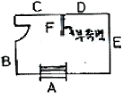
- B와 E
- C와 D
- E와 D
- B와 C
(정답률: 70%)
66. 다음 중 방염성능기준 이상의 실내장식물 등을 설치하여야 하는 특정소방대상물에 해당되지 않는 것은?
- 헬스클럽장
- 방송국
- 종합병원
- 층수가 11층인 아파트
(정답률: 64%)
67. 철근콘크리트 구조에서 압축부재에 사용되는 띠철근의 수직간경을 결정하는 요소가 아닌 것은?
- 기둥의 최소폭
- 띠철근의 지름
- 골재의 지름
- 주근의 지름
(정답률: 37%)
68. 다음 중 소방시설의 구분에 속하지 않는 것은?
- 소화설비
- 급수설비
- 경보설비
- 피난설비
(정답률: 64%)
69. 우리나라 전통건축물에 사용되는 단청에 대한 설명 중 옳지 않은 것은?
- 단청에 사용되는 색은 흔희 오방색(五方色)으로 일컫는 청색, 백색, 적색, 흑색 및 황색을 주로 사용한다.
- 단청은 목조건축물 이외에 고분, 공예품 등에도 사용하였으며 서화에 병용되기도 하였다.
- 단청은 건물의 미화나 내구적인 보호를 위해 사용되었다.
- 단청기법에는 모로단청, 금단청, 가칠단청이 사용되었으며 이 가운데 가장 복잡하고 화려한 것은 모로단청이다.
(정답률: 51%)
70. 다음 중 프리스트레스 콘크리트 구종의 특징이 아닌 것은?
- 내구성과 복원성이 우수하다.
- 구조물의 경량화와 장스팬 구조가 용이하다.
- 일반철근콘크리트구조에 비해 내화성이 좋다
- PS강재가 철근콘크리트에 비하여 강성이 적으므로 진동하기 쉽다.
(정답률: 22%)
71. 철골의 접합방법 중 고장력 볼트접합에 관한 특징으로 옳지 않은 것은?
- 강재간에 생기는 마찰력을 이용한 접합방식이다.
- 작업시 화재의 위험이 적다.
- 불량개소의 수정이 어렵다.
- 현장시공설비가 간편하여 노동력이 절약되고 공기가 단축된다.
(정답률: 50%)
72. 건축물의 바깥쪽에 설치하는 피난계단의 구조에 대한 설명 중 옳지 않은 것은?
- 계단은 그 계단으로 통하는 출입구외의 창문 등으로부터 2m이상 거리를 두고 설치하여야 한다.
- 계단의 유효너비는 0.6m이상으로 하여야 한다.
- 건축물의 내부에서 계단으로 통하는 출입구에는 갑종방화문 또는 을종방화문을 설치하여야 한다.
- 계단은 내화구조로 하여야 하고 지상까지 직접 연결되도록 하여야 한다.
(정답률: 42%)
73. 르네상스 건축에 관한 설명 중 옳지 않은 것은?
- 건축가들은 교회를 설계하는데 있어 고전적 오더가 지니고 있는 인간중심적 요소들을 추출하여 고대의 방법으로 설계하였다.
- 부르넬리스키, 알베르티, 레오나르도 다빈치, 미켈란젤로 등이 활동하였다.
- 아치와 볼트가 주로 사용되었으며 대표작으로는 샤르트르 성당, 노트르담 성당, 랭스 성당 등이 있다.
- 이상적인 비례체계와 중앙집중식 평면을 건축계획 개념으로 추구하였다.
(정답률: 40%)
74. 다음 중 용접결함에 대한 설명 중 옳지 않은 것은?
- 언더 컷 : 용접금속이 홈에 차지 않고 홈 가장자리가 남아있는 것
- 슬래그 섞임 : 용접한 부분의 용접금속 속에 슬래그가 섞여 있는 것
- 블로 홀 : 용접 부분 안에 생기는 기포
- 피트 : 용접금속이 모재에 완전히 붙지 않고 겹쳐 있는 것
(정답률: 40%)
75. 채광을 위하여 단독주택 및 공동주택의 거실에 설치하는 창문 등의 면적은 그 거실의 바닥면적의 얼마이상으로 하여야 하는가?
- 1/3
- 1/10
- 1/15
- 1/20
(정답률: 72%)
76. 다음 그림에서 맞춤의 명칭은?
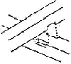
- 반턱맞춤
- 안장맞춤
- 걸침턱맞춤
- 가름장맞춤
(정답률: 60%)
77. 목재의 접합에서 볼트와 같이 사용하여 두 개 접합재의 전단력 저항이 강한 이음을 얻는데 사용되는 것은?
- 듀벨
- 띠쇠
- 안장쇠
- 감잡이쇠
(정답률: 66%)
78. 문화 및 집회시설 중 공연장의 개별관람석(바닥면적이 300m2이상인 것)의 각 출구 유효너비는 최소 얼마 이상인가?
- 1.2m
- 1.5m
- 1.8m
- 2.1m
(정답률: 64%)
79. 칠오토막은 벽돌 온장의 몇배인가?
- 1/4
- 1/2
- 2/3
- 3/4
(정답률: 55%)
80. 다음 중 고딕건축의 특징과 관련 없는 것은?
- 첨두 아치(pointed arch)
- 플라잉 버트레스(flyiing buttress)
- 트레이서리(tracery)
- 단조로운 외벽
(정답률: 43%)